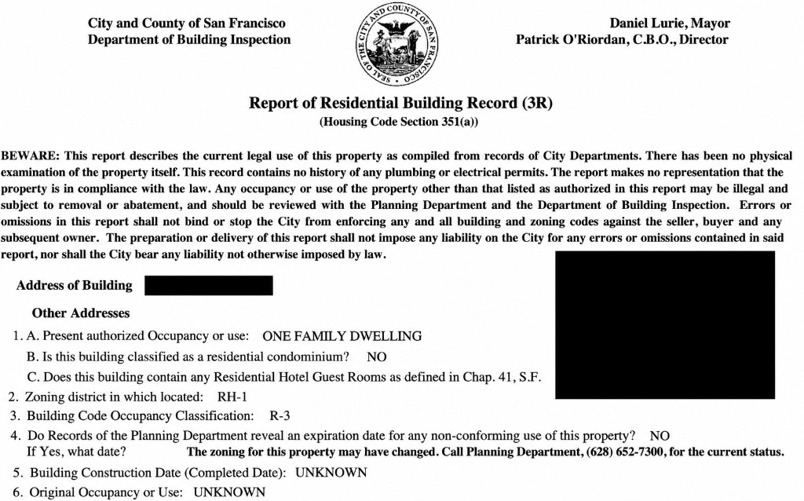

I went to see a house in Pacific Heights with a client who was looking for a single-family home. Zillow listed it that way, the asking price caught my attention, and it had a two-car garage with side-by-side parking. If you’ve ever had to move one car just to get the other out, you’ll understand why I noticed the garage.
Then we walked through the house. It was a duplex.
I asked my client to picture living there exactly as it was. Would he still want it? Or did it only work for him if he could turn it into one home?
A duplex can be a great fit if you want to live in one unit and rent out the other, or give a parent a place of their own. My client wanted one home he could use as a whole. Before we talked about what he should offer, I wanted him to be clear about what he’d be getting for his money.
What would you check first?
Imagine you’re at that showing. The price looks promising, and you’ve just walked through two separate units. What would you check before making an offer?
Let’s see what you’d check first. Choose one answer.
I’d start with the city records and approved plans. I want to know how many dwellings the city recognizes and whether it approved any changes to the layout. That helps me choose which sales to compare it with. If your plans depend on combining the units, I’d also want to know whether there’s an approval path before you spend time getting construction estimates.
The price looked good. Compared with what?
If you’ve read my article about asking prices on Zillow, you know I like to start with what similar homes actually sold for. On this tour, I had a question before I could even get to the comps. What kind of property were we buying? Can You Trust the Asking Price on Zillow?
Imagine two buildings on the same block with roughly the same square footage. In one, the kitchen opens onto the backyard and all the bedrooms are upstairs. In the other, the space is split between two apartments, each with its own kitchen and entrance. The numbers might look similar in a spreadsheet. On a tour, you can feel the difference.
If you want a parent to have their own place, you might value that second apartment more than another bedroom upstairs. If you want everyone to be able to walk from their bedroom to the same kitchen, you’ll look at that same property differently. I’d start with recent sales of properties with a similar approved use, then look at layout, condition, light, outdoor space, and parking.
What I want to avoid is paying a price that assumes you’re getting one legal home, then finding out after closing how much time and money it could take to get there. And the city may say no.
The North Beach house that looked like one home
In 2021, a family bought a home on Vallejo Street in North Beach for $4.75 million. It had five bedrooms, one kitchen, and a roof deck. It looked and lived like a single-family home. The city treated it as a four-unit building. The buyers told the San Francisco Chronicle they knew what the paperwork said and had been reassured the discrepancy wouldn’t be a big deal.
The owners later proposed keeping three upstairs units combined as one home and restoring a separate unit downstairs. That would have left two homes in a building the city recognized as having four. On April 7, 2026, the San Francisco Board of Supervisors upheld the denial of that proposal. Board of Supervisors case record · Final motion
What stayed with me is that the buyers knew about the discrepancy. I can see how you’d walk into a beautiful house that feels finished and think the paperwork is something you can sort out later.
That’s where I slow down. If someone removed a kitchen, opened a wall, or connected two floors years ago, I want to see what the city approved. If the work was never approved, I want to know whether there’s a path to keep the layout and what restoring the units could involve if there isn’t. Those answers can change whether you want the house at all.
What I check when a listing says “single-family home”
I start with the 3R report, the permit history, and the seller disclosures. The 3R is San Francisco’s Report of Residential Building Record. If the listing says one home and the records point to two units, I look for the documents that explain the difference. When someone says, “The remodel was permitted,” I ask what the permit covered. For a merger, I’d look for the approval and plans covering the change in unit count and check whether the relevant work received final sign-off. San Francisco Property Information Map · SF Planning’s merger guidance

I compare the paperwork with what I saw on the tour. Are there separate entrances? Is there a second kitchen, or a room that looks like it used to be one? Does an interior staircase connect spaces that may once have been separate? Those are clues about what to look for in the plans. I’d ask the same kind of questions if a listing advertised a rentable downstairs apartment. A kitchen and separate entrance would make me want to check what use the city approved. SF Planning’s dwelling unit legalization FAQ
I ask about discrepancies before we put a number on the offer. If the records and layout tell different stories, I’d ask San Francisco Planning or the Department of Building Inspection to clarify what’s approved. If the purchase depends on changing the layout, I’d have a local architect look at the space and plans. If there’s an open enforcement issue or a question about a tenancy, I’d bring in a real estate attorney.
Can I buy a duplex and turn it into a single-family home?
Say you tour a duplex and think, “I love the house. Could I just connect the two floors?” I understand the appeal. You can already picture where the bedrooms would go.
Going from two legal dwellings to one removes a home from San Francisco’s housing supply. The city reviews projects that remove units through a merger under Planning Code Section 317. Some projects qualify for an exception. Others can require a hearing and discretionary approval, and certain past evictions can prevent approval. Even if both units are empty when we tour, I’d still want to understand the rental and occupancy history. SF Planning’s merger guidance · Section 317 exemptions · Dwelling unit removal application
A contractor can tell you what opening up the staircase might cost. If combining the units is the whole reason you’d buy the property, I’d want to understand the approval path before you decide how much to offer.
Can I turn a single-family home into a duplex?
Sometimes. Maybe you like the upstairs and can picture a separate apartment downstairs for a parent or a tenant. Depending on the address and the project, you may have a path to add a second primary dwelling or an accessory dwelling unit, commonly called an ADU. I’d start by asking what you want that second space to do. Would a smaller apartment work for you, or do you need a full second home? San Francisco ADU design and permitting guide
On the tour, I’d look at where someone would enter, how much daylight the space gets, and where the kitchen and bathroom could go. I’d also ask what you’d give up. If one reason you loved the house was the side-by-side parking, would you still want it if the new apartment took over the garage?
Then I’d have an architect look at the space and help you understand what could be permitted, what the work might cost, and how long it might take. If you’re counting on rent to make the purchase affordable, you’ll need a budget that works while you own the property and the work is underway.
What if I want a duplex so I can rent out one unit?
Then I’d look for a duplex that works for that plan from the start. Is the second unit approved as a dwelling? Is it vacant or occupied? If someone already lives there, what do the lease and tenancy records tell us? If the unit is vacant, what rent is realistic, and does the budget still work if it takes longer than expected to find a tenant?
I’d also leave room for repairs and periods without rent. If you’d be happy living in one unit and renting out the other, that second dwelling could be the reason you choose the property in the first place. I’d want you to know what you’re counting on before you make an offer.
How is financing a duplex different from financing a single-family home?
I’m a real estate agent, and your lender can tell you what you qualify for. But I want you to know how duplex financing can work before you decide what fits your budget.
If you buy a legal duplex and plan to live in one unit, you may be able to use a residential mortgage. Conventional, FHA, and VA loans can all be options for eligible buyers. Before we write an offer, I’d ask how much you’d need to put down, how much cash you’d need left after closing, and how much of the rent your lender would count. Fannie Mae eligibility matrix · HUD’s FHA mortgage program · VA purchase loans
Can the rent from the other unit help me qualify?
Yes, it can. Say the appraiser estimates the other unit could rent for $4,000 a month. When a lender uses a lease or appraiser-supported market rent under Fannie Mae’s guidelines, it generally starts with 75%, which would be $3,000 a month in this example. The other 25% accounts for vacancy and maintenance. How much of that $3,000 helps you qualify depends on your circumstances and the loan program. I’d ask the lender to run the numbers for the actual property before building that rent into your buying budget. Fannie Mae’s rental income guidelines
Can I borrow more for a duplex?
The conforming loan limit is higher for a two-unit property. In San Francisco County in 2026, it’s $1,249,125 for a one-unit home and $1,599,375 for a two-unit property. Those figures apply to the loan amount. Your purchase price can be higher depending on your down payment. FHFA’s 2026 county loan limits
How much would I need to put down?
Some conventional programs allow 5% down on an eligible duplex when you live in one of the units. If you need a high-balance loan in San Francisco, ask what down payment applies to that loan. FHA may allow 3.5% down, and eligible VA buyers may be able to put 0% down, depending on program requirements. I’d also ask about reserves, the money your lender may require you to have available after closing. Fannie Mae eligibility matrix · HUD’s FHA mortgage program · VA purchase loans
If you’re curious about the FHA option, here’s a lender’s explanation. The Federal Savings Bank’s guide to buying a duplex with an FHA loan as an owner-occupant
What if I want to rent out both units?
I’d tell your lender upfront so they can quote it as an investment property. For example, Fannie Mae’s standard eligibility matrix allows up to 75% financing for a two-unit investment purchase, which means at least 25% down under that option. I’d ask for a separate rate quote and find out how much cash you’d need to keep in reserve. Fannie Mae eligibility matrix
What if the listing says single-family and the city records show two units?
I’d send the records to your lender early. I’d ask how they’ll evaluate the property, what documents they need, and whether that changes the financing you were counting on. If your offer depends on rental income, I’d want the lender to confirm what they can count before you write it.
Two more questions I’d ask
What if the seller says, “It’s been this way for 20 years”? I can see why that feels reassuring when the house looks finished. I’d still ask what was changed and look for the approved plans and final permit sign-offs. If your plans depend on keeping that layout, I’d want to know what the city approved.
Can I buy just one of the two units? If you only want the upstairs flat, I’d ask what’s actually for sale. Are you looking at the entire building, a separately titled condo, or a share of the building through a tenancy in common, also called a TIC? You might be standing in the same upstairs flat either way. What you’d own is a different question.
Three questions to save for your next showing
- What am I buying? Does the listing describe one home, two units, or a home with an in-law apartment?
- What did the city approve? Ask for the 3R report, approved plans, and final permit sign-offs for work that may have changed the unit count or layout.
- Would I still buy it as it is today? If your answer depends on combining the units, adding an apartment, or collecting rent, find out what you still need to verify before you decide how much to offer.
You can start online by searching the address in the city’s Property Information Map. If the listing, floor plan, and city records tell different stories, bring that up before offer day. San Francisco Property Information Map
When I’d tell a buyer to walk away
One thing I take pride in is looking at each purchase as if I were buying the place myself. If I were putting my own money into that Pacific Heights house, I’d want to think through what could happen. If the city didn’t approve combining the units, would I still want to live there? If the work took longer or cost more than I expected, would I still be happy I bought it?
I take those questions seriously because it’s your money, your time, and the place you’re going to live. You can love the house and still realize it only works for you if a few things go your way. If it doesn’t work for you as it is and the changes you need are uncertain, I’d rather help you walk away now than see you buy it and regret it later.
If you’re looking at a San Francisco home and something about the listing or floor plan doesn’t add up, send it to me. I’d love to hear what you’re looking for and tell you how I can help you. Email me at greta@mosaikrealestate.com.
Related: Can You Trust the Asking Price on Zillow? · Should You Pay Cash for a $5M Home in San Francisco? · More from the blog · San Francisco buyer guide
Greta Tengattini